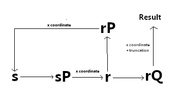

Make your own dual elliptic curve DRBG backdoor!
This page demonstrates a dual elliptic curve backdoor similar what is theorised to exist in Dual_EC_DRBG.
Explaination
Dual EC deterministic random bit generator is an algorithm to generate supposedly cryptographically secure random numbers from an initial seed. Every time a random number is generated, the internal state s is updated, as shown in the diagram. In theory, it should not be possible to determine this internal state by observing the output of the algorithm, however it became apparent (thanks to the work of several cryptographers) that if P and Q are carefully chosen - that is there is a secret e value linking them - then the process can trivially be reversed.
How to use this
Enter some seed in the random bit generator and click 'get 10 random values'. These are 10 consecutive random values from the algorithm. To perform the backdoor, copy two consecutive values (ideally the first and second output) into 'output 1' and 'output 2' and click 'Backdoor internal state'. Note that the backdoored internal state will not be the initial seed you entered, instead it is the updated internal state rP.x from after output 1 is generated. You can copy the rP.x back into seed of the random bit generator and the values generated should match, albeit offset.
The random bit generator:
Seed is hex and should be prefixed with 0x
The backdoor:
Copy two consecutive outputs of the random bit generator. Do NOT prefix with 0x. The algorithm will brute force the first two bytes, until it finds the right rQ. It will then use the secret e to calculate erQ, and since P=eQ it has calculated rP, the next internal state.